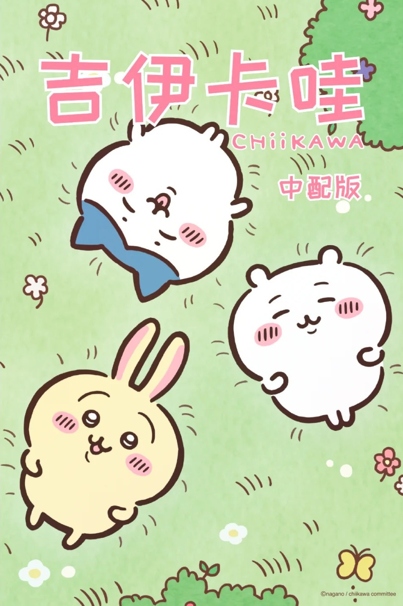

关于作品

电视动画《吉伊卡哇》改编自ナガノ的同名漫画，于2022年4月4日起每周五6点40分在富士电视台播出，2023年由杰外动漫引进中国，2024年1月1日起，《吉伊卡哇》中译版动画在哔哩哔哩和抖音平台上的官方账号持续更新。
《吉伊卡哇/小可爱/ちいかわ》其实是『なんか小さくてかわいいやつ』简写，意为感觉又小又可爱的东西。
《吉伊卡哇》（ちいかわ）是日本的漫画家ナガノ创作出来的漫画角色，漫画自2020年开始在网路上连载，并在2022年制作成电视动画在日本首播。因呆萌可爱的外形，加上他角色外表截然不同的奇特世界从而引发热烈讨论。